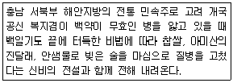
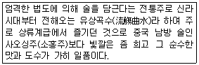
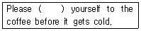
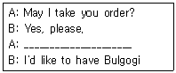
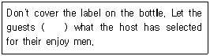
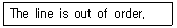
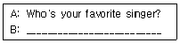
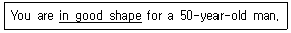
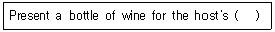

조주기능사 (2006-10-01 기출문제)
1과목: 주류학개론
1. 영국에서 발명한 무색투명한 음료로서 키니네가 함유된 청량음료는?
- Cider
- Cola
- Tonic Water
- Soda Water
(정답률: 77%)

2. 미국산 위스키(Whisky)의 86Proof를 우리나라 도수로 변환하면 얼마인가?
- 40도
- 41도
- 42도
- 43도
(정답률: 81%)
3. 샴페인에 관한 설명 중 틀린 것은?
- 샴페인은 포말성(Sparkling)와인의 일종이다.
- 샴페인 원료는 피노 느와, 피노 뫼니에, 샤르도네이다.
- 동 페리뇽(Dom Peringon)에 의해 만들어졌다.
- 샴페인 산지인 샹파뉴 지방은 이탈리아 북부에 위치하고 있다.
(정답률: 67%)
4. 다음 중 연속식 증류(Patent still Whisky)법으로 증류하는 위스키는?
- 아이리쉬 위스키(Irish Whisky)
- 블랜디드 위스키(Blended Whisky)
- 몰트 위스키(Malt Whisky)
- 그레인 위스키(Grain Whisky)
(정답률: 42%)
5. Martini에 가장 기본적인 장식 재료는?
- 체리(Cherry)
- 올리브(Olive)
- 오렌지(Orange)
- 자두(Plum)
(정답률: 84%)
6. Rob Roy를 조주할 때는 일반적으로 어떤 술을 사용하는가?
- Rye Whisky
- Bourbon Whisky
- Canadian Whisky
- Scotch Whisky
(정답률: 42%)
7. 클라렛(Claret)이란 다음 중 어떤 와인의 종류인가?
- 적포도주(Red Wine)
- 백포도주(White Wine)
- 담색포도주(Rose Wine)
- 황색포도주(Yellow Wine)
(정답률: 75%)
8. 1쿼터(quart)는 몇 온스(Ounce)를 말하는가?
- 1온스
- 16온스
- 32온스
- 38.4온스
(정답률: 75%)
9. 다음 중 멕시코산 증류주는?
- Cognac
- Johnnie walker
- Tequila
- Cutty Sark
(정답률: 95%)
10. 커피는 음료의 어느 부문에 속하는 음료인가?
- 알콜성 음료
- 기호 음료
- 영양 음료
- 청량 음료
(정답률: 91%)
11. 일반적으로 Bourbon Whisky를 주조할 때 약 몇 %의 어떠한 곡물이 사용되는가?
- 50% 이상의 호밀
- 40% 이상의 감자
- 50% 이상의 옥수수
- 40% 이상의 보리
(정답률: 68%)
12. 다음 중 장식으로 양파(Cocktail onion)가 필요한 것은?
- 마티니(Martini)
- 깁슨(Gibson)
- 좀비(Zombie)
- 다이쿼리(Daiquiri)
(정답률: 91%)
13. Pina Colada를 만들 때 재료로 가장 거리가 먼 것은?
- 럼
- 파인애플 쥬스
- 코코넛 밀크
- 레몬 쥬스
(정답률: 49%)
14. 스팅거(Stinger)를 제공하는 유리잔(Glass)의 종류는?
- 하이볼(High ball) 글라스
- 칵테일(Cocktail) 글라스
- 올드 패션드(Old-Fashioned) 글라스
- 사워(Sour) 글라스
(정답률: 60%)
15. 바에서 사용하는 기구로 술병에 꽂아 소량으로 일정하게 나오게 하는 기구는 무엇인가?
- Pourer
- Muddler
- Corkscrew
- Squeezer
(정답률: 86%)
16. 물건을 운반하는데 사용하는 것은?
- Dispenser
- Trolley
- Ice Box
- Decanter
(정답률: 78%)
17. 다음에서 설명되는 약용주는 무엇인가?

- 두견주
- 송순주
- 문배주
- 백세주
(정답률: 63%)
18. 곡물(Grain)을 원료로 만든 무색투명한 증류주에 두송자(Juniper berry)의 향을 착미시킨 술은?
- 데낄라(Tequila)
- 럼(Rum)
- 보드카(Vodka)
- 진(Gin)
(정답률: 84%)
19. 독일 포도주의 최상급 표시는?
- AOC
- VDQS
- Varietal Wine
- Qmp
(정답률: 54%)
20. 다음 중 일반적으로 서빙온도가 가장 높아야 하는 것은?
- 소다수
- 적포도주
- 백포도주
- 맥주
(정답률: 75%)
21. 다음 칵테일(Cocktail) 중 글라스(Glass) 가장자리에 소금으로 프로스트(Frost)하여 내용물을 담는 것은?
- Million Dollar
- Cuba Libre
- Grasshopper
- Margarita
(정답률: 75%)
22. 백포도주는 주로 어느 식사에 많이 제공되는가?
- 육류
- 생선류
- 과일류
- 후식류
(정답률: 77%)
23. 칵테일 조주시 재료의 비중을 이용해서 섞이지 않도록 하는 방법은?
- Blend 기법
- Build 기법
- Stir 기법
- Float 기법
(정답률: 69%)
24. 다음에서 설명되는 우리나라 고유의 술은?

- 두견주
- 인삼주
- 감홍로주
- 경주교동법주
(정답률: 73%)
25. 다음 중 증류주로 만든 칵테일이 아닌 것은?
- Manhattan
- Rusty Nail
- Irish Coffee
- Grasshopper
(정답률: 58%)
26. 브랜디(Brandy) 숙성도의 고급화 순서가 옮은 것은?
- 3Star - V.S.O - V.S.O.P - X.O
- 3Star - V.S.O.P - V.S.O - X.O
- 3Star - X.O - V.S.O - V.S.O.P
- 3Star - V.S.O - X.O - V.S.O.P
(정답률: 63%)
27. 다음 중 하면 발효 맥주에 해당 되는 것은?
- Stout Beer
- Porter Beer
- Pilsen
- Ale Beer
(정답률: 42%)
28. 다음 칵테일 중 Snow Style기법의 칵테일이 아닌 것은?
- Margarita
- Irish Coffee
- Kiss of Fire
- Mai-Tai
(정답률: 40%)
29. 스틸와인(Still Wine)을 바르게 설명한 것은?
- 발포성 와인
- 식사 전 와인
- 비발포성 와인
- 식사 후 와인
(정답률: 67%)
30. 리큐르(Liqueur)의 제조법과 가장 거리가 먼 것은?
- 블렌딩법(Blending)
- 침출법(Infusion)
- 증류법(Distillation)
- 에센스법(Essence process)
(정답률: 53%)
2과목: 주장관리개론
31. 와인의 빈티지(Vintage)가 의미하는 것은?
- 포도주의 판매 유효 연도
- 포도의 수확 년도
- 포도의 품종
- 포도주의 도수
(정답률: 93%)
32. 생맥주(Draft Beer)취급의 필수적인 요건이 아닌 것은?
- 냉장시설의 적정온도 유지
- 술통 속 맥주의 정확한 압력
- 쾌적한 실내 장식과 판매카운터
- 선입선출에 의한 재고 순환
(정답률: 84%)
33. 다음 중 바텐더가 해야 할 업무가 아닌 것은?
- 표준 레시피에 의한 정량 조주를 해야 한다.
- 용모가 단정하고 예의 바른 매너를 지켜야 한다.
- 제공된 음료는 정확히 전표를 발행해야 한다.
- 매출 관리 및 인원 관리 등 업장을 전반적으로 책임진다.
(정답률: 88%)
34. Canadian Whisky가 아닌 것은?
- Canadian Club
- Seagram's V.O
- Seagram's 7 Crown
- Crown Royal
(정답률: 28%)
35. 맥주 제조 과정에서 비살균 상태로 저장 되는 맥주는?
- Black Beer
- Draft Beer
- Porter Beer
- Lager Beer
(정답률: 72%)
36. 와인(Wine)을 오픈(Open)할 때 사용하는 기물로 적당한 것은?
- Cork Screw
- White Napkin
- Ice Tong
- Wine Basket
(정답률: 96%)
37. 주류의 용량을 측정하기 위한 기구는?
- Jigger Glass
- Mixing Glass
- Straw
- Decanter
(정답률: 88%)
38. Port Wine을 옳게 표현한 것은?
- 항구에서 막노동을 하는 선원들이 즐겨 찾는 적포도주
- 적포도주의 총칭
- 스페인에서 생산 되는 식탁용 드라이(Dry)포도주
- 포르투갈에서 생산되는 감미(Sweet)포도주
(정답률: 62%)
39. 효과적인 와인 보관요령 중 틀린 것은?
- 햇볕을 피해 어두운 곳에 보관한다.
- 코르크 마개는 촉촉한 상태로 보관한다.
- 외부의 공기가 병 속에 들어오는 것을 막는다.
- 장기간 보관할 때는 세워서 보관한다.
(정답률: 90%)
40. 바(Bar)기물이 아닌 것은?
- Stirer
- Shaker
- Bar Table Cloth
- Jigger
(정답률: 74%)
41. 브랜디 글라스(Brandy Glass)에 대한 설명 중 틀린 것은?
- 튤립형의 글라스이다.
- 향이 잔속에서 휘감기는 특징이 있다.
- 글라스를 예열하여 따뜻한 상태로 사용한다.
- 브랜디는 글라스에 가득 채워 따른다.
(정답률: 88%)
42. Cognac의 숙성년도를 표시하는 X.O는 몇 년 정도를 나타내는가?
- 5~6년
- 10~20년
- 40~45년
- 75년 이상
(정답률: 47%)
43. Par Stock은 무엇을 의미하는가?
- 식음료 재료 저장
- 식음료 예비 저장
- 영업에 필요한 적정 재고량
- 영업 후 남아 저장하여야 할 상품
(정답률: 79%)
44. 블러디 메리(Bloody Mary)에 주로 사용되는 쥬스는?
- 토마토 쥬스
- 오렌지 쥬스
- 파인애플 쥬스
- 라임 쥬스
(정답률: 80%)
45. 칵테일 글라스(Cocktail Glass)의 3대 명칭이 아닌 것은?
- 베이스(Base)
- 스템(Stem)
- 보울(Bowl)
- 캡(Cap)
(정답률: 82%)
46. 바텐더 보조(Bar helper)의 역할이 아닌 것은?
- 바에서 필요한 모든 물품을 창고로부터 수령한다.
- 장식에 필요한 과일류를 슬라이스(Slice)하여 준비 한다.
- 와인을 주문받고 서브한다.
- 글라스 종류를 정리정돈 한다.
(정답률: 50%)
47. 일반적으로 포도주(Wine)저장실의 온도로 가장 적당한 것은?
- 1~5℃
- 6~10℃
- 12~15℃
- 18~22℃
(정답률: 50%)
48. 쉐리와인(Sherry Wine)이 주로 생산되는 나라는?
- 스페인
- 포르투갈
- 스위스
- 독일
(정답률: 72%)
49. 브랜디 에그넉(Brandy Eggnog)의 재료로 적합하지 않은 것은?
- 브랜디
- 계란
- 설탕
- 과일즙
(정답률: 72%)
50. 다음 설명 중 잘못된 것은?
- 모든 꼬냑(Cognac)은 브랜디에 속한다.
- 모든 브랜디는 꼬냑에 속한다.
- 꼬냑지방에서 생산되는 브랜디만이 꼬냑이다.
- 꼬냑은 포도를 주재로 한 증류주의 일종이다.
(정답률: 62%)
3과목: 고객서비스영어
51. 다음 ( ) 안에 알맞은 단어는?

- drink
- help
- like
- does
(정답률: 29%)
52. 밑줄 친 곳에 알맞은 대화는?

- Do you have a table for three?
- Pass me the salt, please.
- How do you like your steak?
- What would you like to have?
(정답률: 81%)
53. 다음 ( ) 안에 들어갈 적당한 것은?

- see
- to see
- seeing
- seen
(정답률: 70%)
54. 다음 문장을 올바르게 해석한 것은?

- 전화가 고장 났습니다.
- 지금 통화중입니다.
- 선이 연결되지 않습니다.
- 전화가 잘 들리지 않습니다.
(정답률: 40%)
55. 다음 중 서로 반대말이 아닌 것은?
- soft - smooth
- light - heavy
- west - east
- weak - strong
(정답률: 68%)
56. What is the name of famous Liqueur on scotch basis?
- Drambuie
- Cointreau
- Grand marnier
- Curacao
(정답률: 60%)
57. 보기에서 B 내용으로 적당한 것은?

- I like jazz the best.
- I guess I'd have to say Elton John.
- I don't really like to sing
- I like opera music
(정답률: 66%)
58. 다음 중 밑줄 친 부분의 뜻은?

- hand some
- smart
- healthy
- young
(정답률: 41%)
59. 다음 물음에 가장 적당한 것은?
- Ballantine's
- J&B
- Jim Beam
- Cutty Sark
(정답률: 52%)
60. 다음 ( )안에 들어갈 적당한 것은?

- approve
- to approve
- approval
- see
(정답률: 28%)